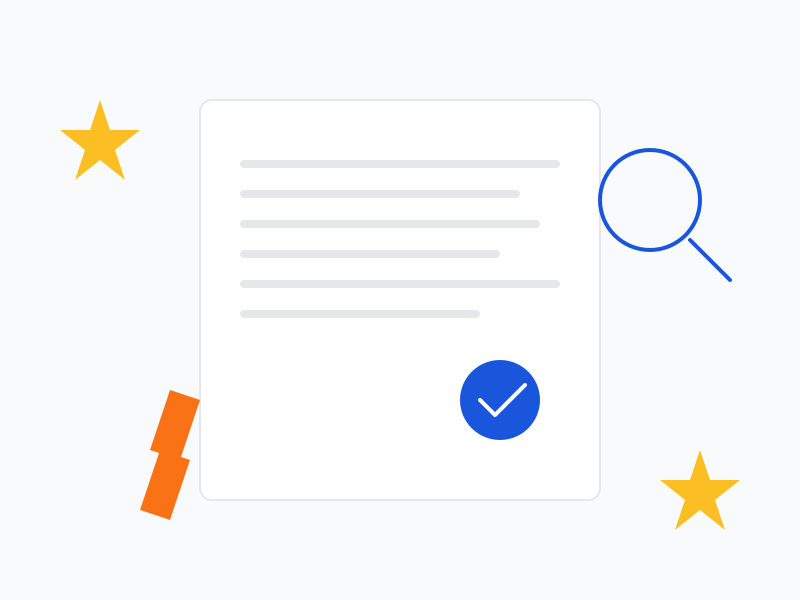

01
วิทยานิพนธ์และงานวิจัย
ตรวจภาษา ความสอดคล้องของคำศัพท์ หัวข้อ ตาราง รูปแบบการอ้างอิง และคู่มือของมหาวิทยาลัย โดยไม่แก้สาระวิชาการแทนเจ้าของงาน
ดูบริการงานวิชาการPROOFFIND EDITORIAL STUDIO
ตรวจคำผิด ไวยากรณ์ วรรคตอน และรูปแบบเอกสารอย่างเป็นระบบ ตั้งแต่วิทยานิพนธ์ บทความวิชาการ นิยาย ไปจนถึงเอกสารธุรกิจ พร้อมคำแนะนำที่ช่วยให้งานเขียนของคุณน่าเชื่อถือขึ้น

แต่ละประเภทเอกสารมีมาตรฐานและจุดที่ต้องระวังต่างกัน เราจึงจับคู่ผู้ตรวจตามลักษณะงาน เพื่อให้แก้ได้ตรงจุดและไม่ทำให้น้ำเสียงต้นฉบับหายไป
ตรวจภาษา ความสอดคล้องของคำศัพท์ หัวข้อ ตาราง รูปแบบการอ้างอิง และคู่มือของมหาวิทยาลัย โดยไม่แก้สาระวิชาการแทนเจ้าของงาน
ดูบริการงานวิชาการเกลาภาษาและรูปแบบให้พร้อมส่งวารสาร ตรวจบทคัดย่อ คำสำคัญ การอ้างอิง และความสม่ำเสมอของคำเฉพาะ
ดูรายละเอียดตรวจคำผิด วรรคตอน คำซ้ำ ความต่อเนื่องของชื่อตัวละครและเหตุการณ์ พร้อมรักษาเสียงของนักเขียนให้เป็นธรรมชาติ
ดูบริการนิยายตรวจรายงาน ข้อเสนอ โบรชัวร์ เว็บไซต์ เรซูเม่ ฉลาก และสื่อก่อนเผยแพร่ ให้ถ้อยคำชัดเจนและภาพลักษณ์เป็นมืออาชีพ
ดูงานเฉพาะทางตรวจ grammar, clarity, academic tone และความเป็นธรรมชาติของภาษาอังกฤษให้เหมาะกับบทความ งานสมัครเรียน หรือเอกสารธุรกิจ
ดูบริการภาษาอังกฤษตรวจสัญญาณที่ควรทบทวนและความซ้ำของเนื้อหา พร้อมคำแนะนำจากคนจริง โดยไม่สรุปผลจากเครื่องมือเพียงอย่างเดียว
ดูบริการตรวจ AIการตรวจที่ดีไม่ใช่การเปลี่ยนทุกประโยคให้เหมือนกัน แต่คือการทำให้เนื้อหาของคุณสื่อสารได้ชัดขึ้น โดยยังคงเจตนา น้ำเสียง และศัพท์เฉพาะของเจ้าของงาน
ดูประเภทเอกสาร กลุ่มผู้อ่าน คู่มือรูปแบบ และจุดที่ต้องการให้เน้นเป็นพิเศษ
ไล่ตั้งแต่คำและเครื่องหมาย ไปจนถึงความต่อเนื่องของประโยคและรูปแบบทั้งฉบับ
รับไฟล์ฉบับแก้และไฟล์ที่เห็นรอยแก้ พร้อมคุยต่อได้หากมีจุดที่ต้องการปรับ
การตรวจพิสูจน์อักษรที่มีคุณค่าควรช่วยลดความคลุมเครือและทำให้คนอ่านเดินทางผ่านเนื้อหาได้ราบรื่นขึ้น
ตรวจคำผิด คำซ้ำ คำฟุ่มเฟือย คำทับศัพท์ และเลือกคำให้ตรงความหมายและบริบท
ดูประธาน–กริยา การเชื่อมความ ลำดับใจความ และประโยคที่อ่านแล้วตีความได้หลายแบบ
เช็กชื่อบุคคล คำย่อ หน่วย ตัวเลข หัวข้อ ตาราง และรูปแบบการเว้นวรรคให้เป็นระบบเดียวกัน
ช่วยตรวจตามคู่มือที่ลูกค้าระบุ เช่น APA, IEEE หรือรูปแบบของวารสารและมหาวิทยาลัย
ปรับข้อเสนอแนะให้เหมาะกับงานวิชาการ งานธุรกิจ งานสร้างสรรค์ หรือเอกสารเพื่อการสมัคร
เมื่อมีจุดที่ไม่ควรเดาแทนเจ้าของงาน เราจะทำเครื่องหมายและอธิบายสิ่งที่ควรตรวจต่อ
เราเชื่อว่าความถูกต้องกับความเป็นมนุษย์ของงานเขียนต้องอยู่ด้วยกัน จึงออกแบบบริการให้ตรวจสอบได้ สื่อสารง่าย และเริ่มจากโจทย์จริงของลูกค้า
งานวิชาการ งานสร้างสรรค์ และเอกสารธุรกิจใช้สายตาคนละแบบ เราเลือกผู้ตรวจให้เหมาะกับบริบท
แจ้งสิ่งที่จะตรวจ ระดับการเกลา รูปแบบไฟล์ และกำหนดส่งก่อนเริ่ม เพื่อลดความเข้าใจไม่ตรงกัน
ส่งเอกสารผ่านช่องทางที่ตกลงกันได้ พร้อมแจ้งเงื่อนไขการเก็บไฟล์และ NDA หากงานต้องการ
หากมีจุดที่อยากคุยต่อ ทีมงานพร้อมอธิบายเหตุผลและปรับแก้ตามขอบเขตบริการที่ตกลงกัน
อัตราด้านล่างเป็นแนวทางเบื้องต้น ราคาสุดท้ายจะดูจากจำนวนคำ ความยาก รูปแบบไฟล์ และกำหนดส่ง เพื่อให้คุณตัดสินใจได้ก่อนเริ่มงาน
เหมาะกับเอกสารที่ต้องการเก็บรายละเอียดภาษาและความถูกต้องก่อนใช้งาน
เหมาะกับงานที่ต้องตรวจทั้งภาษา โครงสร้างความสม่ำเสมอ และรูปแบบการอ้างอิง
เหมาะกับบทความ เอกสารสมัครเรียน และงานธุรกิจที่ต้องการภาษาอังกฤษเป็นธรรมชาติ
งานด่วน งานจัดหน้า งานที่มีตารางจำนวนมาก หรืองานที่ต้องทำตามคู่มือเฉพาะ อาจมีเรทราคาและเวลาส่งต่างออกไป
“ทีมงานชี้จุดที่เราอ่านผ่านตาไปหลายรอบได้ละเอียดมาก ที่ชอบคือยังรักษาศัพท์และน้ำเสียงของงานวิจัยไว้ ไม่ได้แก้จนความหมายเปลี่ยน”
“ก่อนส่งบทความภาษาอังกฤษ ทีมช่วยปรับประโยคที่ฟังแข็งให้เป็นธรรมชาติมากขึ้น และอธิบายทุกจุดที่แก้ ทำให้ตรวจงานต่อเองได้ง่าย”
“ส่งเอกสารการตลาดให้ตรวจเป็นระยะ คุยโจทย์ง่าย ได้งานตรงเวลา และทีมช่วยสังเกตคำที่อาจทำให้ลูกค้าเข้าใจผิดได้ดี”
รวมคำตอบเรื่องขอบเขตงาน ระยะเวลา ราคา และความลับของเอกสาร เพื่อให้คุณเตรียมไฟล์ได้ถูกต้องและคุยกับทีมได้ตรงประเด็น
ยังมีคำถามอื่น คุยกับทีมได้คือการตรวจทานคำสะกด ไวยากรณ์ วรรคตอน การใช้คำ การเว้นวรรค และรูปแบบการพิมพ์ เพื่อให้เอกสารถูกต้อง อ่านลื่น และสื่อความหมายชัดขึ้น โดยไม่เปลี่ยนสาระสำคัญของต้นฉบับ
พิสูจน์อักษรเน้นรายละเอียดระดับคำ ประโยค และรูปแบบ ส่วนบรรณาธิการมองภาพรวม เช่น โครงสร้าง เหตุผล ลำดับเนื้อหา น้ำเสียง และความเหมาะสมกับผู้อ่าน หากงานต้องการทั้งสองระดับสามารถแจ้งทีมเพื่อออกแบบขอบเขตงานได้
ส่งไฟล์ตัวอย่างหรือไฟล์เต็ม ประเภทงาน จำนวนคำหรือจำนวนหน้า ภาษาที่ต้องการตรวจ คู่มือรูปแบบที่ต้องใช้ และกำหนดส่ง หากมีจุดที่กังวลเป็นพิเศษให้บอกพร้อมไฟล์ได้เลย
ขึ้นอยู่กับจำนวนคำ ความหนาแน่นของเนื้อหา และขอบเขตงาน เอกสารทั่วไปอาจเริ่มที่ 24–48 ชั่วโมง ส่วนวิทยานิพนธ์หรือบทความวิชาการมักใช้เวลาหลายวัน ทีมจะแจ้งเวลาที่ทำได้จริงพร้อมราคาให้ก่อนเริ่ม
เราให้ความสำคัญกับการรักษาความลับของเอกสารและใช้ไฟล์เท่าที่จำเป็นต่อการทำงาน หากเป็นงานวิจัย ข้อมูลลูกค้า หรือเอกสารภายในองค์กร สามารถแจ้งเงื่อนไข NDA และการลบไฟล์หลังส่งมอบได้
ทำได้ การรักษาเสียงของผู้เขียนเป็นส่วนสำคัญของงาน เราจะปรับระดับการเกลาให้เหมาะกับโจทย์ และทำเครื่องหมายจุดที่เป็นข้อเสนอแนะเพื่อให้เจ้าของงานเป็นผู้ตัดสินใจ
เนื้อหานี้ช่วยให้เลือกบริการได้ตรงกับปัญหา โดยอธิบายตั้งแต่ความหมายของ proofreading ไปจนถึงสิ่งที่ควรเตรียมก่อนส่งไฟล์
การรับพิสูจน์อักษร (proofreading) คือการตรวจทานต้นฉบับอย่างละเอียดเพื่อแก้ข้อผิดพลาดด้านคำสะกด ไวยากรณ์ วรรคตอน การใช้คำ การเว้นวรรค และรูปแบบที่ไม่สม่ำเสมอ จุดประสงค์ไม่ใช่การเขียนงานใหม่ แต่คือการทำให้สิ่งที่คุณตั้งใจสื่อออกไปถึงผู้อ่านได้ชัดเจนขึ้นและดูเป็นมืออาชีพก่อนส่ง ตีพิมพ์ เผยแพร่ หรือใช้งานจริง
คำว่า “ตรวจคำผิด” มักถูกใช้แทนการพิสูจน์อักษร แต่ในงานสำคัญการตรวจที่ดีควรมองกว้างกว่านั้น เพราะความผิดพลาดอาจอยู่ในคำที่สะกดถูกแต่ใช้ไม่ตรงบริบท อยู่ในประโยคที่มีหลายความหมาย หรืออยู่ในความไม่สอดคล้องระหว่างหัวข้อ ตาราง และเนื้อหา ดังนั้นทีม Prooffind จึงเริ่มจากการทำความเข้าใจเป้าหมายของเอกสารก่อนเลือกวิธีตรวจ
แนบคู่มือรูปแบบหรือไฟล์ตัวอย่างที่ต้องการยึดเป็นมาตรฐาน จะช่วยให้ผู้ตรวจตัดสินใจได้สอดคล้องตลอดทั้งฉบับ
งานวิชาการมีศัพท์เฉพาะและเงื่อนไขรูปแบบมากกว่าเอกสารทั่วไป นอกจากตรวจภาษาแล้วควรเช็กความสม่ำเสมอของคำศัพท์ ชื่อบท ตาราง รูปภาพ เลขหัวข้อ การอ้างอิงในเนื้อหา และรายการบรรณานุกรมตามรูปแบบที่กำหนด เช่น APA หรือ IEEE ผู้ตรวจไม่ควรเดาข้อมูลหรือแก้ข้อค้นพบแทนนักวิจัย แต่ควรทำเครื่องหมายจุดที่ควรให้เจ้าของงานตรวจสอบเพื่อป้องกันความหมายคลาดเคลื่อน
สำหรับนักศึกษา เรารับดูแลงานตามสาขาและคู่มือของมหาวิทยาลัย เช่น จุฬาลงกรณ์มหาวิทยาลัย มหาวิทยาลัยธรรมศาสตร์ มหาวิทยาลัยมหิดล มหาวิทยาลัยเกษตรศาสตร์ รวมถึงสาขา นิติศาสตร์ บริหารธุรกิจ พยาบาลศาสตร์ และ ศึกษาศาสตร์
นิยายและหนังสือไม่ได้วัดแค่ความถูกต้องตามไวยากรณ์ แต่ต้องรักษาจังหวะ บทสนทนา มุมมองผู้เล่า และอารมณ์ของฉากไว้ด้วย การตรวจจึงต้องดูความต่อเนื่องของตัวละคร เวลา สถานที่ และคำเรียกต่าง ๆ ไปพร้อมกับคำผิดและวรรคตอน เราจะเสนอแนะเท่าที่จำเป็นและแยกจุดที่เป็น “ข้อเสนอ” ออกจากจุดที่เป็น “ข้อผิดพลาด” เพื่อให้นักเขียนตัดสินใจได้เอง
เครื่องมือช่วยสะกดและระบบตรวจ AI มีประโยชน์ในฐานะตัวช่วยคัดกรอง แต่ยังไม่เข้าใจเจตนาของผู้เขียน ศัพท์เฉพาะ หรือบริบททุกแบบได้ครบ การตรวจโดยบรรณาธิการจึงมีบทบาทในการตัดสินใจว่าอะไรควรแก้ อะไรควรคงไว้ และจุดใดควรถามกลับเจ้าของงาน อ่านเพิ่มเติมเกี่ยวกับการเลือกใช้บริการได้ที่ วิธีเลือกบริการพิสูจน์อักษร และ ความต่างระหว่างบรรณาธิการกับผู้พิสูจน์อักษร
แนวทางการทำเนื้อหา: เราให้ความสำคัญกับเนื้อหาที่เป็นประโยชน์ต่อคนอ่าน อธิบายที่มาและขอบเขตอย่างโปร่งใส และปรับปรุงจากประสบการณ์งานจริง สอดคล้องกับคำแนะนำของ Google Search Central ภาษาไทย
ส่งไฟล์หรือข้อความตัวอย่างมาให้ทีมช่วยดูขอบเขตงาน ระยะเวลา และราคาเบื้องต้นได้ฟรี